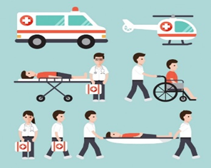

Con el fin de evitar la interrupción en el proceso de atención, teniendo en cuenta los tiempos que se requieren para garantizar al usuario el conocimiento de las novedades frente a quien presta el servicio y la continuidad de su tratamiento, las partes deberán organizar el traslado sin que genere traumatismos para los usuarios en cuanto al acceso a los servicios y a los Prestadores de Servicios de Salud o Proveedores de Tecnologías en Salud entrantes y salientes en la prestación de los mismos.
La gradualidad dependerá de la condición y el tratamiento de cada usuario, evitando en cualquier circunstancia interrupciones de terapias dialíticas, quimioterapias, tratamiento farmacológico que puedan llevar a la aparición de complicaciones, aumento en la severidad o generación de resistencias al tratamiento [1].
Facturación en salud - Autor(es): Luciany Contreras A. Melisa Díaz M. Maira D. Espitia M. María C. González M. - Universidad de Córdoba - 2022